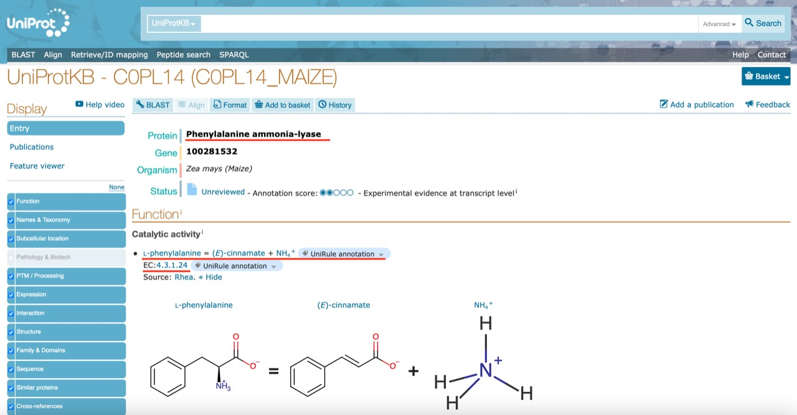

Cómo identificar y caracterizar un gen a partir de su secuencia de ADN
Usar una herramienta de alineamiento de secuencias para identificar la secuencia desconocida (secuencia query). En este caso, se usa el programa
BLASTdeNCBI: <https://blast.ncbi.nlm.nih.gov/Blast.cgi>.Nuestra query es una secuencia de ADN proveniente del organismo zea mays (maíz). Las plantas sensibles a ciertas enfermedades poseen un defecto en esta secuencia, lo cual inhabilita la síntesis de ácido cumárico, un fenilpropanoide asociado a la resistencia de enfermedades . Identificar y caracterizar el gen que codifica nos permitara analizar su importancia biológica.
- Elegir la secuencia que tenga mejor alineamiento con la query.
3. Analizar e interpretar las características del gen identificado.
¿Que significa el alineamiento? ¿Como se ve si clickeas en proteinas con menor porcentaje de identidad?
El alineamiento de secuencias muestra el parentesco entre la secuencia con la que se trabaja (secuencia ‘query’) y la encontrada (secuencia ‘subject’). En el caso de esta secuencia, todos los nucleótidos coinciden base por base con los de la secuencia subject, dándonos un porcentaje de identidad del 100%. Si analizamos otros genes que no tienen un porcentaje de identidad del 100%, podemos ver que la mayoría de los nucleótidos de nuestra secuencia están presentes en la ‘subject’ pero se encuentran ‘gaps’, es decir, se encontró una secuencia similar a la query pero con regiones que no se alinean. A medida que decrece el porcentaje de identidad, comienzan a aparecer más ‘mismatches’, además de ‘gaps’.
¿Que proteina es?
La enzima Fenilalanina amonio liasa
¿Por que la CDS es más chica que la region abarcada por el exon?
Dependiendo del marco de lectura, pueden haber diversos exones para una misma secuencia codificante. La ubicación de los codones de iniciciación y de terminación determina el largo de la secuencia codificante, que va a ser a lo sumo del mismo tamaño que los exones, pero usualmente más corta como en este caso.
¿Donde estan los codones de iniciación y de terminación?
122 (ATG) - 2272 (TGA).
Para visualmente identificar estos codones y el marco de lectura, buscamos el codón de iniciación (AUG, en el caso de la secuencia con la que trabajamos seria ATG por ser ADN) y los codones de terminación (TAA, TAG, TGA). Utilizando la herramienta de COMMAND + F y sabiendo que el marco iba de 122 - 2272 encontramos que la secuencia de terminación era la TGA.

Utilizar UNIPROT para profundizar en la caracterización del gen. https://www.uniprot.org/
En la sección de Gene Ontology (GO) se puede ver la clasificación del gen según su función. Podemos ver que nuestro gen actúa como una enzima amonio-liasa y participa en la biosíntesis de ácido cinámico a partir de fenilalalina. Esto es de particular importancia para nuestro análisis porque el ácido cinámico es un fenilpropanoide, cómo el ácido cumárico.
Los números EC (Enzyme Comission) clasifican a las enzimas en base a la reacción química asociada. En este caso la enzima pertenece al grupo 4: liasas.

La sección de Interactionmuestra un mapa de las diferentes proteínas que interactuan con nuestra enzima (pal4).

Luego en la sección de Family & Domains se puede ver la similitud estructural y secuencial con otras proteínas y los dominios funcionales presentes.
En este caso entramos a OMA, una base de datos filogenómica.
Podemos ver 6 organismos diferentes que poseen esta proteína en su genoma, y sus respectivos dominios.
Luego entrando a otra plataforma, como eggNOG, encontramos 900 proteínas similares a nuestra secuencia: ortólogos.
Ortólogos son genes que comparten el último ancestro común y cuya divergencia se debe a la especiación. Es decir, el mismo gen en diferentes especies .Tress, M. (2005). Análisis de Secuencias, Familias de Proteínas. Masters En Bioinformática Madrid 2005. http://www.pdg.cnb.uam.es/cursos/Master2005/Fam_theory/familias.pdf
Podemos ver que en la lista de ortólogos de eggNOG aparecen los mismos organismos que en OMA.Setaria italica es mijo y triticum aestivum es trigo común.
- Analizar las vías metabólicas en las que participa el gen identificado. En este caso se usa el programa KEGG PATHWAY: https://www.genome.jp/kegg/pathway.html .
Seleccionamos el mapa de vías metabólicas relevante, en este caso el asociado a la síntesis de fenilpropanoides.
La proteína de interés está remarcada en rojo con su número EC correspondiente (4.3.1.24). Con este mapa podemos visualizar las diferentes vías metabólicas en la que participa. Como habíamos visto previamente, nuestra enzima participa en la biosíntesis de ácido cinámico.
Un defecto en la secuencia que codifica para la enzima Fenilalanina amonio liasa lleva a que esta no pueda sintetizar ácido cinámico a partir de la fenilalanina, que luego no puede sintetizar ácido cumárico, cuyo rol es importante en la resistencia a enfermedades en las plantas.
A partir del ácido cinámico, además del ácido cumárico, se sintetizan la cumarina y el cinamaldehído, que también son fenilpropanoides que permiten a las plantas resistir enfermedades.
Cómo encontrar secuencias de ADN de genes de interés
Usar una plataforma para buscar la proteína o gen de interés y encontrar secuencias de ADN asociadas. Usamos la plataforma
GenedeNCBI: https://www.ncbi.nlm.nih.gov/gene/.Nos interesa una serie de proteínas llamadas “proteínas relacionadas con patogénesis” , las cuales se abrevian como
PRseguidas de un número, por ejemplo PR-1. Para acotar la búsqueda, conviene indicar una especie, como soybean en este caso.
- Elegir una proteína y explorar
¿Por qué la barra roja es más corta que la azul?
La barra roja representa la proteína, que se tradujo a partir del codón de inicio del ARNm hasta el codón de terminación, por eso la secuencia violeta del ARNm es más larga, ya que esta presenta todos los nucleótidos, más allá del marco de lectura.
ARNm:
Proteína:

¿Qué es el péptido señal y cuál es su función?
Cuando el ARNm llega al citoplasma unido a un ribosoma, comienza a traducirse a la proteína que corresponda al marco de lectura correspondiente. Una vez comenzada la traducción, a esta proteína se le asigna una péptido señal (secuencia de aminoácidos) la cual actúa como una especie de etiqueta que indica donde debe seguir traduciéndose esta proteína, ya sea acoplada al retículo endoplasmático rugoso, en el citoplasma, núcleo, etc. para que así la proteína llegue al lugar correcto.
- Explorar
UNIPROT


Quitinasa del tomate:
Otras proteínas de interés son las quitinasas que son enzimas capaces de digerir las paredes celulares de los hongos.
Buscando nuevamente en el NCBI, podemos ver el esquema de la estructura de la quitinasa y en particular sus exones e intrones.
Las partes de la secuencia de genes que contienen la información para producir las proteínas se llaman exones, ya que se expresan, mientras que las partes de la secuencia del gen que no codifican se llaman intrones, porque están en medio o interfieren con los exones. El proceso por el cual los intrones son escindidos del transcripto de ARNm y los exones se unen para generar el ARNm maduro se denomina Splicing.